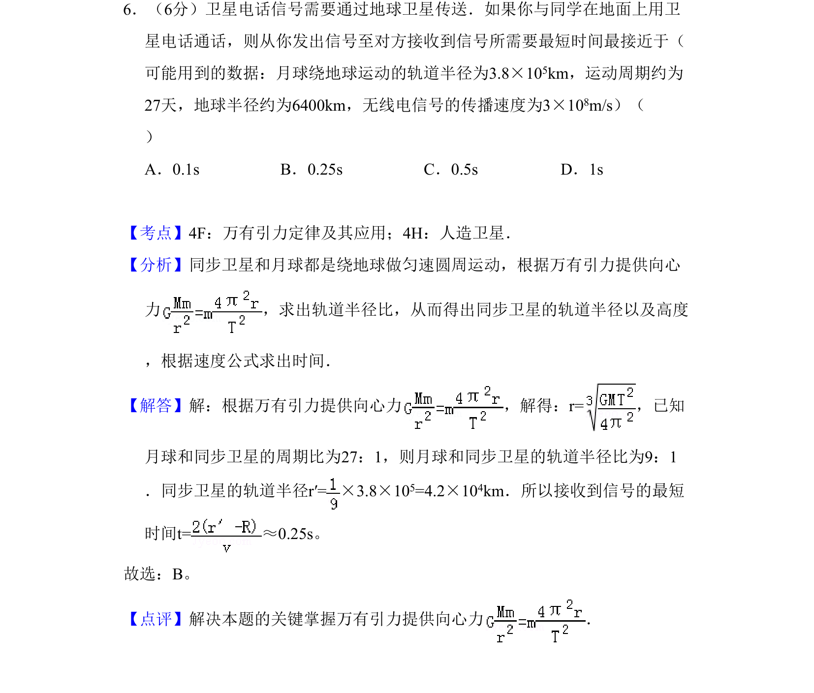
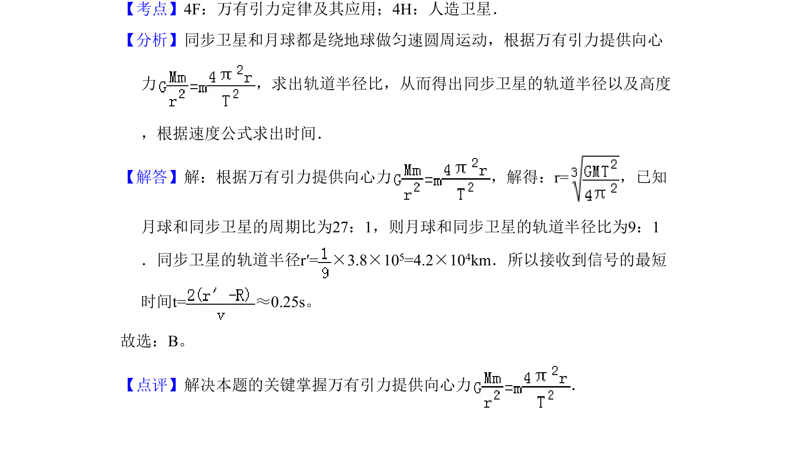

考点：万有引力定律 同步卫星 周期与轨道半径关系

本题利用万有引力定律求同步卫星轨道半径，进而计算信号传播最短时间。

📄 原 PDF 第 6 页：
素材/真题/吉林/2008-2024·（吉林）物理高考真题/2011年高考物理试卷（新课标）（解析卷）.pdf
6．（6分）卫星电话信号需要通过地球卫星传送．如果你与同学在地面上用卫 星电话通话，则从你发出信号至对方接收到信号所需要最短时间最接近于（ 可能用到的数据：月球绕地球运动的轨道半径为3.8×105km，运动周期约为 27天，地球半径约为6400km，无线电信号的传播速度为3×108m/s）（ ） A．0.1s B．0.25s C．0.5s D．1s
【考点】4F：万有引力定律及其应用；4H：人造卫星．菁优网版权所有 【分析】同步卫星和月球都是绕地球做匀速圆周运动，根据万有引力提供向心 力 ，求出轨道半径比，从而得出同步卫星的轨道半径以及高度 ，根据速度公式求出时间． 【解答】解：根据万有引力提供向心力 ，解得：r=，已知 月球和同步卫星的周期比为27：1，则月球和同步卫星的轨道半径比为9：1 ．同步卫星的轨道半径r′=×3.8×10 5=4.2×104km．所以接收到信号的最短 时间t=≈0.25s。 故选：B。 【点评】解决本题的关键掌握万有引力提供向心力 ．